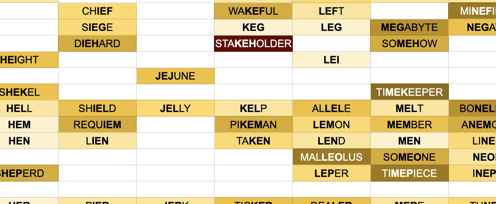
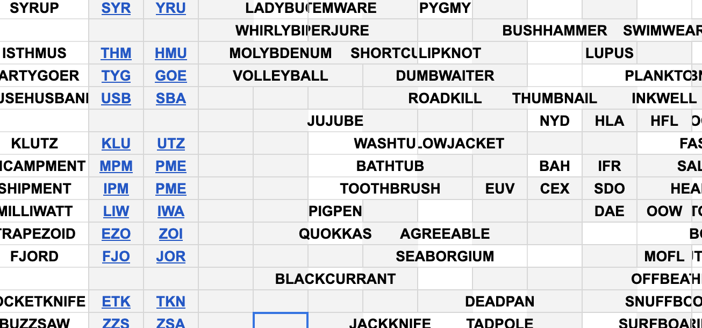

Between the second and third terms of my second year of university, I dedicated a moderate amount of time to a spreadsheet containing unique words for as many trigrams as possible.

I keep finding small excuses to learn how to use Sheets better. It’s no VLOOKUP, but this sheet features INDIRECTs, ADDRESSes, intra-sheet HYPERLINKs, and conditional formatting, which already puts it, from a technical standpoint, in the top half of all the sheets I’'ve ever made.
Highlights include DODECAHEDRON surrounded by words less than half its length, the full column corresponding to REA through REZ, and the extremely long shortlist of unplaced words.

My stats section tells me that as of writing this sentence I have filled in about 20% of all trigrams. Not bad!
Visit AAZ here
Update: Joyous days! As of 20 Jun 2024, we’re up to 24% of trigrams, and the titular AAZ slot has now been filled,
by the word HEXANITROHEXAAZAISOWURTZITANE.